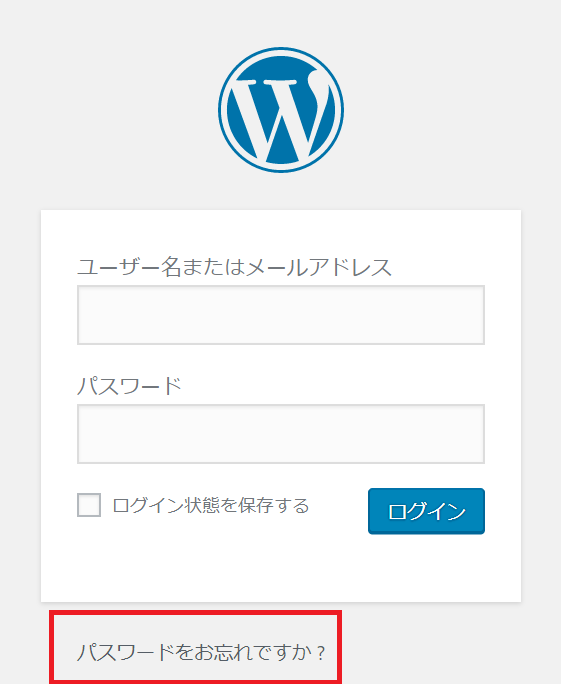
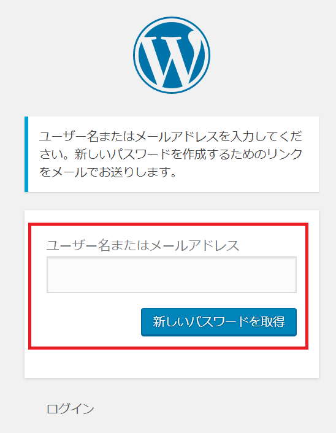
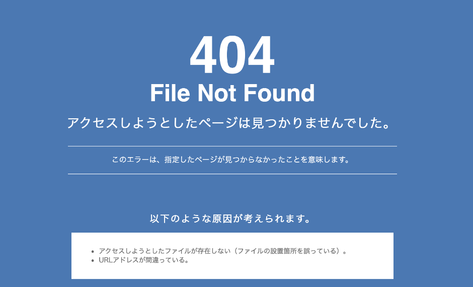

ワードプレスを運営していてログインが出来なくなるケースとしては、いくつかの場面が考えられます。
（１）ユーザー名やパスワードを忘れた
（２）ログインURLを忘れた
（３）ログイン画面が表示されなくなった
それぞれのケースにおいて、対処方法を解説してみたいと思います。
パスワードを忘れても、パスワードの再発行から設定を変更することができます。

「パスワードをお忘れですか？」をクリックし、メールアドレスかユーザー名を入力することで 登録メールアドレス宛にパスワード変更メールが届きます。

ワードプレスにおけるユーザー名の入力は「ユーザー名」及び「登録メールアドレス」の入力をすればＯＫとなります。そのため、ユーザー名を忘れてしまっても、メールアドレスを入れれば問題ありません。
「どのメールアドレスで登録していたのか、それも覚えていない」という場合は、自分が活用しているメールアドレスを幾つか入力してみましょう。
ユーザー名の入力において登録したメールアドレスも忘れてしまって、いくつか入力しても ログインできない場合は、データベースからユーザー名とパスワードを調べることができます。
普通、データベースに入って調べるのはとても難しいので、出来ない方が多いと思います。 ただエックスサーバーなどであればレンタルサーバーにログインして、MYSQLなどのデータベース部分から入ることで調べることができます。
次に考えられるログインできないケースの例は、「ログインURLがわからなくなってしまった」ケース。 このようなことがないようにログインURLなどはお気に入りに登録しておきましょう。

ログインURLを忘れてしまった場合の、対応方法として取得したドメイン名に 次のURLを追加することで画面を表示する方法になります。
ご自身の取得したドメイン名については、ドメイン会社にログインすればわかります。 登録ドメイン名に「/wp-admin/」を追加し、ＵＲＬを表示させることでログイン画面が表示されます。
ドメイン名に「/wp-admin」や「/wp-login.php」を入力してもログイン画面が表示されない場合、 ワードプレスのデータを「wp」フォルダなどに入れている可能性があります。
そのため追加入力する場合も「wp/wp-admin」や「wp/wp-login.php」といったように、 「wp」も加えて追加してみてください。
これまで10社以上の会社でワードプレスを作成してきましたが、大体の場合、ワードプレスのデータを入れているフォルダは「wp」でした。そのためここでは「wp」を追加する形にしています。
ログインが出来ないケースとして考えられる3つ目のケースが 「ログインURLはあっているけど画面が表示されない」「404 notfoundの画面も出てこない」 というケースではないでしょうか。
例えばワードプレスの修正や、バージョンアップなどを行った際、ログイン画面に入ってみたけれども 画面が出てこないというパターンにあたります。
お気に入りでサイト登録していれば、URL間違いということもありません。 この場合は、修正

demiglaze
Web制作を始めて約19年になります（HTML/css、Photoshop、Webマーケティング）。2005年から当サイトの運営を開始。 これまでに300個以上のドメインを取得、10社を超えるレンタルサーバーを利用してきました。